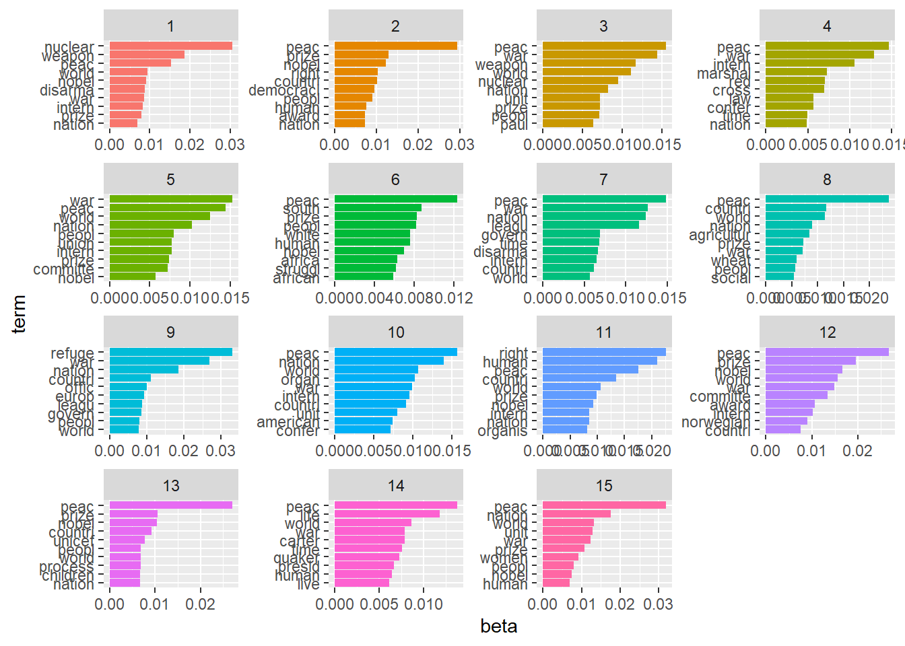
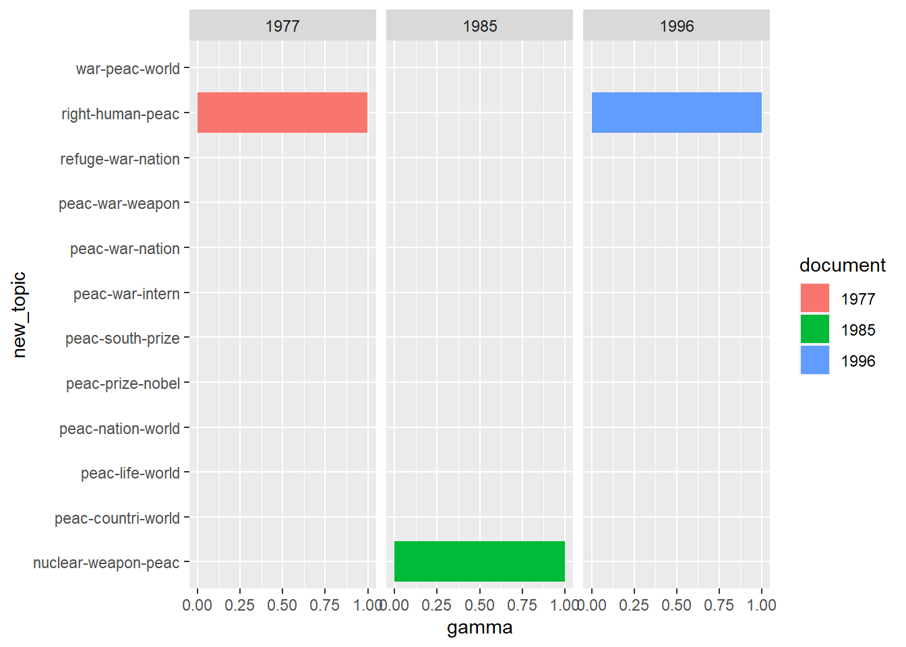
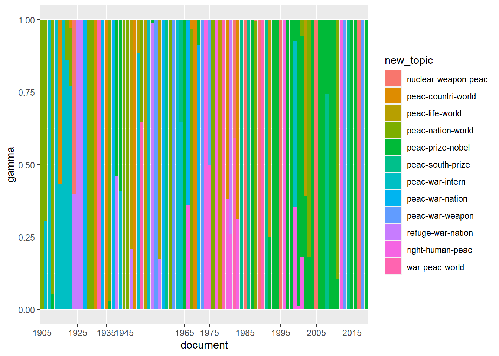

There are a number of topic model instantiations in R. We will go through one of the more popular ones – topicmodels which plays very nicely with the tidyverse.1
topicmodels’s main topic model function is LDA(), which stands for Latent Dirichlet Allocation, a type of topic model and often used as shorthand for topic models in general. It takes a DTM as input and gives us an object of class LDA as output, which we can then analyze and visualize in the tidyverse. There are many points where we can customize, adjust parameters and so on but the one we must specify is the number of topics. This is something that often takes some fiddling with. Unless you have reason to think that the number of topics is extremely limited in a certain corpus one generally uses between ~20-50 topics. The other parameter it makes sense to think of prior to, or under, analysis is document size. As we’ve seen, a DTM will break up a text without concern for order within indvidual documents. So large documents will be extremely generalized in a DTM. It could well be reasonable to break up books, for example, by chapter. We could go more finer grained as well – chunking by paragraph might make sense sometimes, too. Much will depend on the corpus and object of analysis. Experiment and see what leads to the most understandable and coherent topics.
options(stringsAsFactors = FALSE)
library(tidyverse)
library(tidytext)
library(topicmodels)
# read in the dataframe into R as normal
nobel_tidy <- read_rds("data/nobel_stemmed.Rds") %>%
select(Year, Laureate, word_stem) %>%
rename(Year = Year, Laureate = Laureate, words = word_stem)
# transform dataframe to DTM
nobel_dtm <- nobel_tidy %>%
group_by(Year) %>%
count(words, sort = TRUE) %>%
cast_dtm(Year, words, n)There are many points where we can customize, adjust parameters and so on but the one we must specify is the number of topics. This is something that often takes some fiddling with. Unless you have reason to think that the number of topics is extremely limited in a certain corpus one generally uses between ~15-50 topics (very roughly).
Another parameter it makes sense to think of prior to, or under, analysis is document size. As we’ve seen, a DTM will break up a text without concern for order within individual documents. So large documents will be extremely generalized in a DTM. It could well be reasonable to break up books, for example, by chapter. We could go more finer grained as well – chunking by paragraph might make sense sometimes, too. Much will depend on the corpus and object of analysis. Experiment and see what leads to the most understandable and coherent topics.
We are also using the corpus that we have already cleaned and removed stopwords from. We might also question if certain words are turning up so much in every document that they won’t add anything to the topics that the topic model finds (removing frequently appearing words will also reduce the time it takes for the algorithm to fit the topic model). We might consider if, in the Nobel corpus, the word “nobel” will add anything to any of the topics, especially if we are treating the documents as the speeches as a whole. It might or might or not, topic models take some experimentation.
Lastly, the alpha parameter controls how much documents come to be dominated by one or few topics or if the topics are more evenly distributed over documents. This parameter is automatically optimized by the algorithm if the user does not set it, but often algothithmic optimization does not lead to the best model fit from the standpoint of a human. This model tends toward a low alpha and very uneven topic spread so we’ll set it ourselves. Again, this is something the analyst must experiment with.
k = 15
alpha = 2
nobel_tm <- LDA(nobel_dtm, k = k, alpha = alpha)Fitting the model involves us telling R finding a distributions that best match the corpus we have given the general structural assumptions the topic model takes. There are different methods for doing this and they might take a while. We are interested in two distributions: theta (\(\theta\)) – the proportion of each document devoted to which topics, and beta (\(\beta\)) – the proportion of each topic made up by which words (see the presentation pdf for details).
Let’s first take a look at the output of the topic model. We call posterior() to get these so-called posterior distributions.
str(posterior(nobel_tm))## List of 2
## $ terms : num [1:15, 1:8363] 9.39e-19 4.38e-04 1.01e-166 1.40e-03 2.36e-04 ...
## ..- attr(*, "dimnames")=List of 2
## .. ..$ : chr [1:15] "1" "2" "3" "4" ...
## .. ..$ : chr [1:8363] "refuge" "nuclear" "weapon" "war" ...
## $ topics: num [1:92, 1:15] 6.05e-06 1.00 8.71e-06 6.59e-06 6.59e-06 ...
## ..- attr(*, "dimnames")=List of 2
## .. ..$ : chr [1:92] "1981" "2017" "1954" "1925" ...
## .. ..$ : chr [1:15] "1" "2" "3" "4" ...If you call str() on this object you see topicmodels has returned two distributions, one called term that is made up of a matrix of the twenty topics on one axis and the 8063 unique words in the corpus on the other, with each entry indicating likelihood of that word turning up given the topic (we might think of this as the proportion of the topic taken up by each word in the corpus). It is a probability distribution so each words probability within a given topic has to sum to 1. This is the beta matrix. The topics distribution we see is a matrix size 92 x 20, the likelihood of each document (speech) containing each of 20 topics – also summing to 1 within each document and that we might think of as proportions. So what do we do with this?
The most useful thing to look at straight away are the highest words in each topic – do the topics make sense to a human?
terms(nobel_tm, 15)## Topic 1 Topic 2 Topic 3 Topic 4 Topic 5 Topic 6
## [1,] "nuclear" "peac" "peac" "peac" "war" "peac"
## [2,] "weapon" "prize" "war" "war" "peac" "south"
## [3,] "peac" "nobel" "weapon" "intern" "world" "prize"
## [4,] "world" "right" "world" "marshal" "nation" "peopl"
## [5,] "nobel" "countri" "nuclear" "red" "peopl" "white"
## [6,] "disarma" "democraci" "nation" "cross" "union" "human"
## [7,] "war" "peopl" "unit" "law" "intern" "nobel"
## [8,] "intern" "human" "prize" "confer" "prize" "africa"
## [9,] "prize" "award" "peopl" "time" "committe" "struggl"
## [10,] "nation" "nation" "paul" "nation" "nobel" "african"
## [11,] "arm" "world" "time" "organ" "time" "ahtisaari"
## [12,] "award" "polit" "intern" "countri" "life" "nation"
## [13,] "peopl" "plan" "test" "bunch" "jouhaux" "world"
## [14,] "power" "committe" "power" "committe" "award" "polit"
## [15,] "iaea" "govern" "pearson" "word" "norman" "countri"
## Topic 7 Topic 8 Topic 9 Topic 10 Topic 11 Topic 12
## [1,] "peac" "peac" "refuge" "peac" "right" "peac"
## [2,] "war" "countri" "war" "nation" "human" "prize"
## [3,] "nation" "world" "nation" "world" "peac" "nobel"
## [4,] "leagu" "nation" "countri" "organ" "countri" "world"
## [5,] "govern" "agricultur" "offic" "war" "world" "war"
## [6,] "time" "prize" "europ" "intern" "prize" "committe"
## [7,] "disarma" "war" "leagu" "countri" "nobel" "award"
## [8,] "intern" "wheat" "govern" "unit" "intern" "intern"
## [9,] "countri" "peopl" "peopl" "american" "nation" "norwegian"
## [10,] "world" "social" "world" "confer" "organis" "countri"
## [11,] "germani" "develop" "peac" "time" "war" "nation"
## [12,] "noel" "nobel" "nansen" "leagu" "peopl" "peopl"
## [13,] "polit" "econom" "time" "ilo" "award" "polit"
## [14,] "baker" "polit" "unit" "polit" "declar" "organ"
## [15,] "declar" "dr" "commission" "govern" "freedom" "human"
## Topic 13 Topic 14 Topic 15
## [1,] "peac" "peac" "peac"
## [2,] "prize" "life" "nation"
## [3,] "nobel" "world" "world"
## [4,] "countri" "war" "unit"
## [5,] "unicef" "carter" "war"
## [6,] "peopl" "time" "prize"
## [7,] "world" "quaker" "women"
## [8,] "process" "presid" "peopl"
## [9,] "children" "human" "nobel"
## [10,] "nation" "live" "human"
## [11,] "develop" "father" "countri"
## [12,] "conflict" "peopl" "right"
## [13,] "polit" "schweitzer" "hope"
## [14,] "laureat" "countri" "forc"
## [15,] "time" "pire" "time"We can, of course, work directly with these data structures but per our approach in this workshop, we’re going to tidy our results and take the data interpretation and visualization back to the tidyverse where we have all its tools at our disposal.
Let’s first plot the top words in each topic. This is generally where you want to start in evaluating a topic model – are the topics interpretable. We use tidy() to transform the beta matrix into tidy format (one word per row) and then it is a simple task for us to plot it in ggplot.
terms <- tidy(nobel_tm, matrix = "beta")
words_in_topics <- terms %>%
group_by(topic) %>%
slice_max(beta, n = 10) %>%
ungroup() %>%
arrange(topic, -beta)
words_in_topics %>%
mutate(term = reorder_within(term, beta, topic)) %>%
ggplot(aes(beta, term, fill = factor(topic))) +
geom_col(show.legend = FALSE) +
facet_wrap(~ topic, scales = "free") +
scale_y_reordered()
Let’s turn to the matrix of probabilities of topics over documents. To keep us on our toes topicmodels calls this not theta but gamma (\(\gamma\)).
topics_in_documents <- tidy(nobel_tm, matrix = "gamma")
topics_in_documents## # A tibble: 1,380 x 3
## document topic gamma
## <chr> <int> <dbl>
## 1 1981 1 0.00000605
## 2 2017 1 1.00
## 3 1954 1 0.00000871
## 4 1925 1 0.00000659
## 5 1926 1 0.00000659
## 6 1968 1 0.00000735
## 7 2013 1 0.0000123
## 8 1988 1 0.00442
## 9 1953 1 0.00000541
## 10 2016 1 0.0000106
## # ... with 1,370 more rowsThis tells us the estimated proportion of words in each given document devoted (generated by) to a specific topic. A problem here is that numbering topics makes it hard to figure out what this means. So we can first rename the topics. We can do this by hand (recommended) or automatically based on the highest ranking words in the previous beta matrix.
# labelling by hand, we would extend this to 1:20, and given 20 topics if we wanted to name them all
#hand_topics <- tibble(old_topic = 1:3, new_topic = c("International peace", "Nuclear", "Peac and war"))
#topics_in_documents %>%
# left_join(hand_topics_topics, by=c("topic" = "old_topic"))
# alternative two, easier for demonstration purposes on a sub-optimally-fit topic model
(auto_topics <- apply(terms(nobel_tm, 3), 2, paste, collapse = "-")) # pastes together the top three terms for each topic in the nobel topic model## Topic 1 Topic 2 Topic 3
## "nuclear-weapon-peac" "peac-prize-nobel" "peac-war-weapon"
## Topic 4 Topic 5 Topic 6
## "peac-war-intern" "war-peac-world" "peac-south-prize"
## Topic 7 Topic 8 Topic 9
## "peac-war-nation" "peac-countri-world" "refuge-war-nation"
## Topic 10 Topic 11 Topic 12
## "peac-nation-world" "right-human-peac" "peac-prize-nobel"
## Topic 13 Topic 14 Topic 15
## "peac-prize-nobel" "peac-life-world" "peac-nation-world"(auto_topics <- tibble(old_topic = 1:k, new_topic = auto_topics)) # make as tibble where numeric topics are matched with the auto generated ones## # A tibble: 15 x 2
## old_topic new_topic
## <int> <chr>
## 1 1 nuclear-weapon-peac
## 2 2 peac-prize-nobel
## 3 3 peac-war-weapon
## 4 4 peac-war-intern
## 5 5 war-peac-world
## 6 6 peac-south-prize
## 7 7 peac-war-nation
## 8 8 peac-countri-world
## 9 9 refuge-war-nation
## 10 10 peac-nation-world
## 11 11 right-human-peac
## 12 12 peac-prize-nobel
## 13 13 peac-prize-nobel
## 14 14 peac-life-world
## 15 15 peac-nation-world(topics <- topics_in_documents %>%
left_join(auto_topics, by=c("topic" = "old_topic")))## # A tibble: 1,380 x 4
## document topic gamma new_topic
## <chr> <int> <dbl> <chr>
## 1 1981 1 0.00000605 nuclear-weapon-peac
## 2 2017 1 1.00 nuclear-weapon-peac
## 3 1954 1 0.00000871 nuclear-weapon-peac
## 4 1925 1 0.00000659 nuclear-weapon-peac
## 5 1926 1 0.00000659 nuclear-weapon-peac
## 6 1968 1 0.00000735 nuclear-weapon-peac
## 7 2013 1 0.0000123 nuclear-weapon-peac
## 8 1988 1 0.00442 nuclear-weapon-peac
## 9 1953 1 0.00000541 nuclear-weapon-peac
## 10 2016 1 0.0000106 nuclear-weapon-peac
## # ... with 1,370 more rowsNow we have our data in a familiar format we can subset and visualize. Perhaps we’d like to compare the topic distribution in several topics.
topics %>%
filter(document %in% c(1977, 1985, 1996)) %>% # the documents we want to compare
ggplot(aes(new_topic, gamma, fill = document)) +
geom_col() +
coord_flip() +
facet_wrap(~ document, ncol = 3)
We can visualize the distribution of all topics over time.
topics %>%
ggplot(aes(document, gamma)) +
geom_col(aes(group = new_topic, fill = new_topic)) +
scale_x_discrete(breaks = seq(1905, 2019, 10))
Or look at the distribution of specific topics over time.
# This one requires a more balanced topic mixture to be very meaningful, which the Nobel corpus with its current fit does to have
topics %>%
filter(str_detect(new_topic, "war")) %>%
ggplot(aes(document, gamma)) +
geom_line(aes(group = new_topic, color = new_topic)) +
scale_x_discrete(breaks = seq(1905, 2019, 10))There are several packages in R that fit topic models, most notably stm which is incorporates a host of handy visualization tools as well as the capacity to incorporate covariates into the model fit (@roberts2019stm).
This is only the most basic of introductions to topic modeling. For more information on topic modeling and analysis in the tidyverse, see chapter 6 of @silge2017text.
For a good explainer on topic models, see @underwood2012.